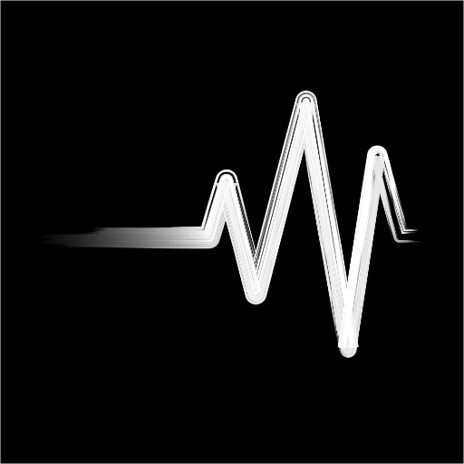

Radical Process
audio processing with a radical, unique, and unprecedented approaches.
all plugins free to download
Trevor (VST3/AU)

Trevor is a wave set distortion plugin.
Unlike ordinary distortion, this plugin distorts the original signal by detecting the zero crosses in it and replaces the intervals between zero crosses with a specified waveforms.
In other words, this plugin doesn't modify the original signal, but it regenerates a new completely new audio signal by keeping just one aspect of the original sound, namely zero crosses.
This process creates a unique digital distortion sound, a bit similar to bit crusher sound. The plugin add a sort of dirtiness or aggressiveness especially to the voice or percussion.
The algorithm is originally invented by Trevor Wischart.